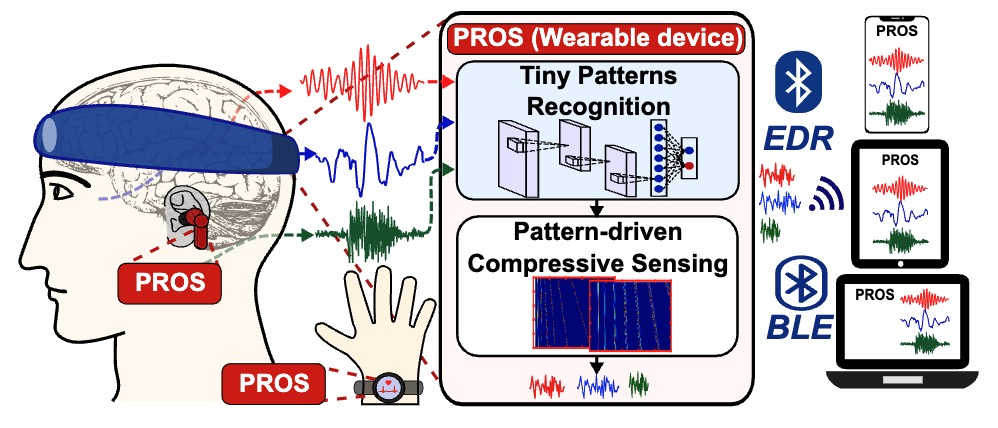

Research Projects

Efficient Test-time Model Adaptation for Edge Devices
Novel approach for efficient test-time adaptation using early-exit ensembles, specifically designed for resource-constrained edge devices.

Deep Learning-based Uncertainty Modeling for IoT Event Detection
Framework for efficient and reliable event detection on resource-constrained microcontrollers.

Smart Light Sensing using Large Language Models
Novel approach using large language models for predictive light sensing and analysis, enabling intelligent environmental monitoring.

Fine-Grained Sports Motion Tracking Using Neural Architecture Search and Adversarial Learning
Novel framework for fine-grained swing tracking using stochastic neural architecture search and adversarial learning.

AI-Enhanced Indoor Mapping with LiDAR Sensing
Novel approach for indoor spectral mapping using low-cost LiDARs, achieving high accuracy in indoor positioning.

AI-Powered Leaf Water Content Monitoring
Low-cost and accurate approach for measuring leaf water content using millimeter-wave radar technology.

Intelligent Pattern Recognition for Wearable Computing
Efficient pattern-driven compressive sensing framework for low-power biopotential-based wearables with on-chip intelligence.

Neural Architecture Optimization for Continual Learning
Hardware-aware meta continual learning system designed for embedded computing platforms.

AI-Enhanced Health Monitoring with Domain Adaptation
Multi-discriminator adversarial training approach for improved cardio-fitness prediction with noisy labels.

Using Contrastive Learning to Analyze and Understand Patterns in Healthcare Time Series Data
Novel contrastive learning framework for time series data leveraging non-stationary and temporal contrast.

Mobile Sports Motion Analysis Using Generative Adversarial Networks
Mobile golf swing tracking system using sensor fusion and conditional generative adversarial networks.

Deep Learning-based Indoor Positioning with Light Sensing
Novel indoor positioning system using passive light spectral information for accurate and efficient localization.

Wearable Authentication using Vibration Detection and Adversarial Learning
Security system for gait-based user authentication on wearable devices using vibration detection.

AI-Powered RFID Facial Recognition
Novel approach for facial recognition using RFID technology, enabling contactless and efficient authentication.